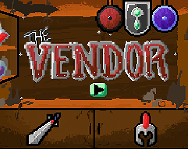

Into The Depths
Released on October 5, 2020
Created for Ludum Dare 47. The theme was "Stuck in a Loop." This game was developed by me, Jessica Dominguez (designer), Luis Molina (audio and SFX), and Valentino Vergara (character design). We decided to make a "deduction" game where you take on the role of a wandering vendor. You have to guess which of your wares will best suit a hero depending on what they tell you and what you can observe from the scene.
My Contributions:
- Project Lead.
- Game Design: Along with Jessica Dominguez, my main collaborator, we decided to create this game with less programming.
- Writing Dialogs.
- Game programming: includes interactions, audio, scene management, and general scripting.
My learnings and things to improve:
- Strong usage of the UI system (which basically keeps the whole game together), which for previous games I hadn't used as extensively.
- Stronger deduction system since, in hindsight, it feels a bit like brute-forcing your way to the solution.
- Better dialogs would give more direction to the player.